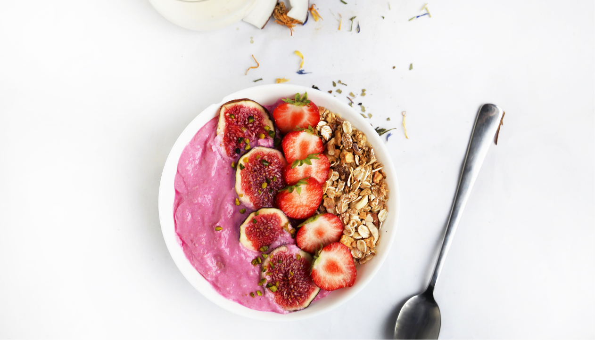
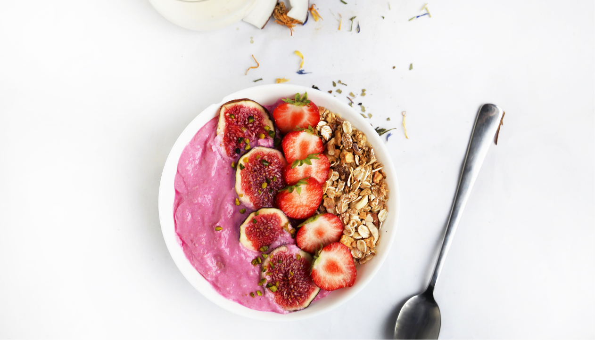

Общие рекомендации
 

Основные правила:
Правило №1
Местное производство
Правило №2
Контроль количества
Правило №3
Больше растительной пищи
Важно!
*Осознанное потребление еды помогает снизить риск развития
заболеваний и сократить воздействие на окружающую среду.
В этой статье мы представим несколько идей, которые помогут вам
потреблять еду осознанным и экологически чистым способом.
В современном мире экологические проблемы становятся все более
актуальными, и мы все должны прикладывать усилия
для снижения негативного воздействия на окружающую среду.
Потребление еды также является одним из аспектов, который может
внести свой вклад в экологическую устойчивость.
Общие рекомендации по потреблению продуктов питания:
Предпочитайте упаковку из натуральных материалов.
Рассчитывайте количество еды, которое вы сможете съесть
до того, как она испортится.
Используйте продукты местного производства.
Если вам позволяет здоровье, потребляйте меньшее количество мяса
и большее количество растительной пищи.
Избегайте продуктов с высоким уровнем пестицидов
и гормонов.
МЫ В СОЦ СЕТЯХ